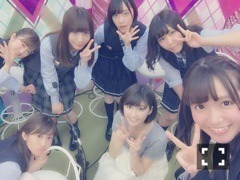
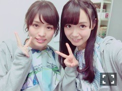
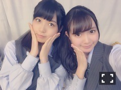

| 2016/06 13 Mon | ひめたん-0o0-その645 |
6月10日～12日は
2ndアルバム
「それぞれの椅子」発売記念
乃木坂46時間TV第2弾でした！

私の個人的MVP写メ
絢音ちゃん可愛すぎる......。
今回もたくさんの企画をお届けしました！
2日目MC
さゆとふたりで夕方～夜の時間帯に
MCを務めさせて頂きました！
拙い司会ではありましたが
私、ああいう立ち回りが好きみたいで
とてもとても楽しかったですo(^o^)o
さゆちゃんありがとう！
他のMCをやったメンバーみんなも
お疲れ様でした～
カラオケバトル
hitomiさん/LOVE2000
自分で選曲しました～
私、普段80年代の方の歌を
テレビで披露する機会が多いのですが
今回は比較的新しめの曲だったかな？
結果赤チームは負けてしまいましたが
みんなの歌声が聴けて素敵な時間でした
歌の技術は......毎度本当すみません。笑
電視台「その後のわだかまりスリー」
私は思いっきりコントのつもりで
前回の収録も今回の生放送も
挑んだつもりなので
皆さんに笑って頂けたら幸せです、
私の話術の無さで不快な思いを
させてしまったならごめんなさい。
それから、二人も巻き込んでごめんね～
また一緒に普段の会話をお届けできて
私は企画して良かったと思ってるよ( ˆωˆ )
えかきうた
生田・ちはる・中元の中3組で挑戦しました
これ時間的に観れた方いらっしゃるかな～？
私のコメントがいちいち穿ってて
あの日何があったんだろう......
可愛くねーなーって思いながら観ました。笑
っていうかねー
正解にたどり着かないんですよ
良かったら皆さんもやってみてくださいね。
他にも企画盛りだくさんでした！
前回も思ったけれど、
46時間生放送なんて
聞いたことない凄いプロジェクトで。
準備してくださった番組スタッフの皆さん、
ご協力いただいたスポンサーの皆さんに
動画配信サイトの皆さん、
とにかくたくさんの方のお力を借りて
無事完走することができました
本当にお疲れ様でした。
そして観てくださった皆さん
ありがとうございました！
おたよりやイラストやTwitter投票、
今回は視聴者の皆さんの協力がないと
成立しない企画もたくさんあって
本当にリアルタイムで
観てくださってるんだな～と
いろんな場面で感じました！
最後に
藤森さんありがとうございました！
私スタジオいなくてごめんなさい～( >_< )

12日はめ～テレ
「千原せいじのバズ☆ドル」
オンエアもありました～
優里・和田・中元の3人で
出演させていただきました( ˆωˆ )
いろんなアイドルさんと共演できたことで
もっと頑張らなきゃなーと
刺激を受けたし
私のことを知って下さってて嬉しかった♡
写メを皆さんのSNSに貼って
収録の感想を書いて下さってて感謝です。
千原せいじさんも初めましてでしたが
気さくな方でたくさんお話して頂きました
楽しい収録でした！

日曜の夜は、らじらー！サンデー
次回、中元は欠席させて頂きます( >_< )
ごめんなさい、何より私が寂しい( >_< )
乃木坂から能條愛未ちゃん、
和田まあやちゃん、伊藤かりんちゃんが
来てくれます！
募集中のメールテーマが
いつもより多いんだ！
たくさん待ってるよ～
◯愛未、まあや、かりんちゃんへの
応援メッセージ
◯RAPで教えてNOGIZAKA CHAN
◯ひめたんが休んでる本当の理由は？
◯ひとりノリあみあみ
◯生写真争奪！まあやクイズ
◯セクシーに言いやがれ♡
(愛未vsまあや)
◯将棋かりんの王手飛車取り
◯乃木坂46メンバー㊙︎プレゼン対決！
(愛未vsかりん)
......とまあ私が文字に起こしても
何のこっちゃって感じかもしれないので
詳しくは公式サイトを見て下さい。笑
お便りの宛先はこちら
声優アーツのゲストは渡部優衣さんです！

まあやとかりんちゃんは初登場です。
ふつおた、リクエストソングも
待ってますよ～♪
そうそう、冒頭でチラッと
お話してくださったみたいで
お二人ともありがとうございます（ ; ; ）
私の口から改めて報告しに行きますので
ちょーっと先になってしまうけれど
待ってて下さい！
今夜のNOGIBINGO!6は
メンバーのはじめてやってみました企画
是非観てくださいね( ˆωˆ )
最終回まで残り数回。早い～
そして、15日16日は
まいまいの卒業コンサート。
まいまいの地元静岡エコパアリーナですね
2日間とも少しずつ違うことします
素敵な卒業コンサートになりそうです。

(＊´・ω・＊)
コメント(620)
2016/06/13 23:42